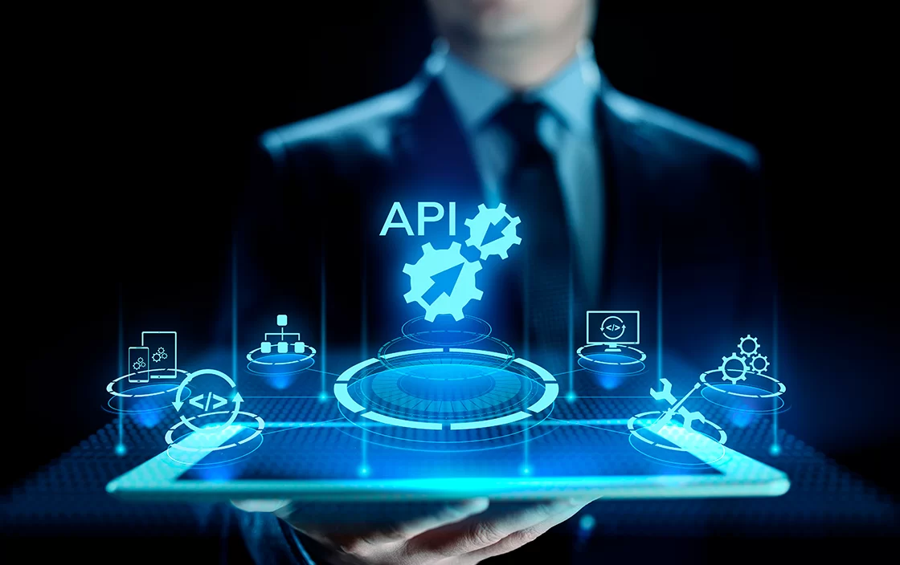

¿Qué Significa API y Qué Es Realmente?

Primero lo primero: ¿qué significan esas tres letras? API es el acrónimo de Application Programming Interface, que en español se traduce como Interfaz de Programación de Aplicaciones.
Pero, ¿qué es en palabras sencillas? Imagina una API como un "contrato" o un conjunto de reglas bien definidas que permite que dos piezas de software diferentes se comunican entre sí. No es la aplicación completa, ni la base de datos, ni el servidor; es el intermediario que define cómo se pueden solicitar y entregar información o funcionalidades específicas entre sistemas. Funciona como un traductor y mensajero entre programas que quizás no hablan el mismo "idioma".
El Mesero Digital: Una Analogía para Entender las APIs

Una de las formas más sencillas de entender qué es una API es pensar en ella como un mesero en un restaurante. Imagina la siguiente situación y sus actores:
- Tú (el Cliente): Eres la aplicación (o el usuario) que necesita algo (datos o una función).
- La Cocina (el Servidor/Sistema): Es donde se "preparan" los datos o las funcionalidades que necesitas.
- El Menú: Es la "documentación" de la API; te dice qué puedes pedir y cómo hacerlo.
- El Mesero (¡La API!): Es el intermediario. Tú no entras a la cocina, le hablas al mesero.
El mesero (la API) toma tu pedido (la petición o request), se asegura de que sea algo que la cocina puede hacer (valida la petición según el menú), lo lleva a la cocina, espera a que esté listo y, finalmente, te trae tu plato (la respuesta o response).
El mesero es ese intermediario crucial que permite la comunicación de forma ordenada y eficiente, ¡sin que tú tengas que saber los detalles de cómo funciona la cocina! Eso es exactamente lo que hace una API entre diferentes sistemas de software.
¿Para Qué Sirven? El Poder de Conectar Mundos Digitales

Ya sabemos qué son, pero ¿cuál es su verdadera utilidad? Las APIs son los "enchufes" del mundo digital. Permiten que aplicaciones y servicios, incluso si fueron creados por diferentes personas y con distintas tecnologías, puedan "conectarse" y trabajar juntos. Sus principales propósitos son:
- Reutilizar Funcionalidad: Evitan que los desarrolladores tengan que "reinventar la rueda". Si una aplicación ya hace algo muy bien (como mostrar mapas), otra aplicación puede usar esa función a través de su API.
- Facilitar la Integración: Permiten que sistemas distintos colaboren. Piensa en cómo una tienda online se conecta con un sistema de pagos (como PayPal o Stripe) o con una empresa de logística para los envíos.
- Compartir Datos de Forma Controlada: Hacen posible que una aplicación acceda a datos de otra, pero de una manera segura y definida por el dueño de los datos. Tú decides qué compartes y cómo (como cuando una app te pide permiso para acceder a tus contactos).
- Fomentar la Innovación: Al permitir que otros construyan sobre funcionalidades existentes, las APIs abren la puerta a la creación de nuevos servicios y aplicaciones que combinan lo mejor de varios mundos.
En resumen, las APIs son esenciales para construir los ecosistemas digitales complejos y conectados que usamos hoy en día, haciendo que todo funcione de manera más fluida y potente.
APIs en Acción: Ejemplos que Usas sin Darte Cuenta

Puede que el término "API" te suene técnico, pero la verdad es que interactúas con ellas constantemente en tu día a día. Aquí tienes algunos ejemplos muy comunes:
- Iniciar Sesión con Redes Sociales: Cuando una web o app te ofrece "Iniciar sesión con Google" o "Entrar con Facebook", está usando la API de Google o Facebook para verificar tu identidad sin que tengas que crear una nueva cuenta.
- Mapas Integrados: ¿Has usado una app de reparto, de taxis o de reserva de hoteles que te muestra un mapa? Lo más probable es que esté usando la API de Google Maps, Apple Maps u OpenStreetMap para mostrar esa información geográfica.
- El Pronóstico del Tiempo: Las aplicaciones y widgets del clima no tienen sus propias estaciones meteorológicas. Consumen datos de servicios especializados a través de sus APIs para darte la predicción actualizada.
- Pagos Online Seguros: Al comprar por internet y pagar con tarjeta o a través de plataformas como PayPal o Mercado Pago, la tienda online utiliza la API de la pasarela de pago para procesar la transacción de forma segura.
- Compartir Contenido: Esos botones de "Compartir en Twitter", "Enviar por WhatsApp" o "Publicar en Facebook" que ves en los artículos y webs utilizan las APIs de esas redes para facilitar el envío de enlaces.
Como ves, las APIs son el "pegamento" invisible que hace que gran parte de la web y las aplicaciones móviles funcionen como las conocemos.
El Futuro es Conectado: ¿Por Qué Son Tan Importantes?
Hemos visto qué son las APIs, cómo funcionan a través de analogías y ejemplos, y para qué sirven. La conclusión es clara: las APIs son mucho más que un simple término técnico; son pilares fundamentales de la tecnología moderna y del futuro.
Permiten a las empresas y desarrolladores:
- Acelerar el desarrollo: Al no tener que construir todo desde cero.
- Mejorar la experiencia del usuario: Integrando servicios útiles y familiares.
- Crear nuevos modelos de negocio: Basados en la "economía de APIs", donde se ofrecen servicios a través de ellas.
- Impulsar la innovación: Facilitando la experimentación y la combinación de tecnologías.
En un mundo donde todo tiende a estar conectado – desde tu móvil y tu reloj hasta tu coche y tu casa – las APIs son las que hacen posible esa interconexión. Entenderlas no es solo para programadores, sino para cualquiera que quiera comprender cómo se construye y funciona el mundo digital que nos rodea. ¡Son el lenguaje universal de las aplicaciones!